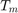
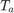
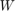

pvl_sapmcelltemp
Estimate cell temperature from irradiance, windspeed, ambient temperature, and SAPM module parameters.
Contents
Syntax
Tcell = pvl_sapmcelltemp(E, E0, a, b, windspeed, Tamb, deltaT)
[Tcell Tmodule] = pvl_sapmcelltemp(E, E0, a, b, windspeed, Tamb, deltaT)
Description
Estimate cell and module temperatures using the Sandia Array Performance Model (SAPM) [1], when given the incident irradiance, wind speed, and ambient temperature.
The cell temperature model is

where
- is the cell temperature (C).
-  is the module backsurface temperature (C).
-  is the ambient air temperature (C).
-  is the wind speed (m/s).
- , and are parameters.
Inputs
- E - Total incident irradiance in W/m^2. E must be a scalar or a vector of the same size as windspeed, and Tamb. Must be >=0.
- E0 - Reference irradiance used when determining delta T, in W/m^2. E0 must be a scalar. Must be >=0. Typically equals 1,000 W/m^2;
- a - SAPM module parameter for establishing the upper limit for module temperature at low wind speeds and high solar irradiance (see SAPM eqn. 11). Must be a scalar.
- b - SAPM module parameter for establishing the rate at which the module temperature drops as wind speed increases (see SAPM eqn. 11). Must be a scalar.
- windspeed - Wind speed in m/s at a height of 10 meters. windspeed must be a scalar or a vector of the same size as E and Tamb. Must be >=0;
- Tamb - Ambient dry bulb temperature in degrees C. Tamb must be a scalar or a vector of the same size as windspeed and E. Must be >= -273.15.
- deltaT - SAPM module parameter giving the temperature difference between the cell and module back surface at the reference irradiance, E0. Must be a numeric scalar >=0.
Outputs
- Tcell - A column vector of cell temperatures in degrees C.
- Tmodule - A column vector of module back temperature in degrees C.
Example
Calculate cell temperature for a typical glass/cell/polymer sheet module mounted on an open rack. a, b, and deltaT parameter from [1], Table 1. Sample weather conditions are used.
deltaT = 3; a = -3.56; b = -0.075; E = 800; % Incident irradiance E0 = 1000; windspeed = 5; %5 m/s Tamb = 10; %10 deg C Tcell = pvl_sapmcelltemp(E, E0, a, b, windspeed, Tamb, deltaT)
Tcell = 28.0366
References
[1] King, D. et al, 2004, "Sandia Photovoltaic Array Performance Model", SAND2004-3535, Sandia National Laboratories, Albuquerque, NM Web Link
See Also
Copyright 2014 Sandia National Laboratories